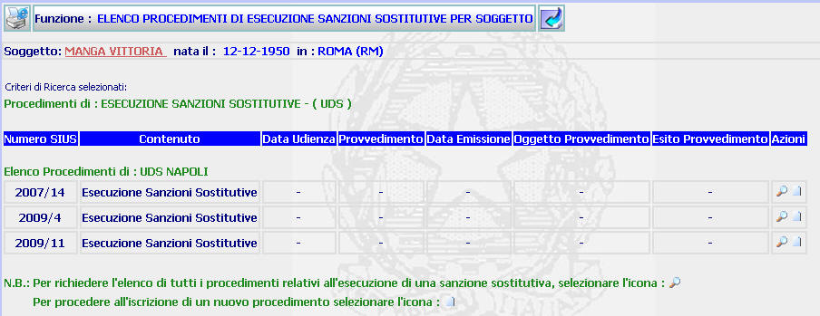

ELENCO PROCEDIMENTI DI ESECUZIONE SANZIONI SOSTITUTIVE PER SOGGETTO: La funzione consente di visualizzare l'elenco (ottenuto partendo dalla maschera di elenco soggetti con procedimenti di esecuzione sanzioni sostitutive) di tutti i procedimenti di esecuzione misura alternativa a carico di un soggetto
LE MASCHERE VIDEO
La funzione viene realizzata attraverso la maschera seguente in cui compare l'elenco di tutti i procedimenti di esecuzione sanzioni sostitutive a carico di un soggetto

COME FARE PER ...
| Per
visualizzare il
dettaglio del soggetto l'utente deve
cliccare sul link relativo al nome del soggetto evidenziato in rosso;
| |
| Per
tornare alla maschera precedente l'utente deve cliccare sul pulsante
|
| Per
iscrivere un nuovo procedimento di ESS
(cd fascicolo "figlio") a carico del soggetto l'utente deve cliccare sul pulsante
|
| Per
visualizzare l'elenco
dei procedimenti relativi all'esecuzione della sanzione sostitutiva l'utente deve cliccare sul pulsante
|
CAMPI
La presente funzione non prevede campi da compilare
PULSANTI
Oltre al pulsante
 facente parte del gruppo di
pulsanti di "Uso Comune", sono
presenti i seguenti pulsanti
facente parte del gruppo di
pulsanti di "Uso Comune", sono
presenti i seguenti pulsanti
|
PULSANTE |
DESCRIZIONE |
|
|
A fronte di tale comando, il sistema visualizza l'elenco dei procedimenti relativi all'esecuzione della sanzione sostitutiva. |
|
|
A fronte di tale comando, il sistema consente di iscrivere un nuovo procedimento di ESS |
BOTTONI
Oltre ai comandi funzionali relativi al menù verticale non sono presenti altri bottoni